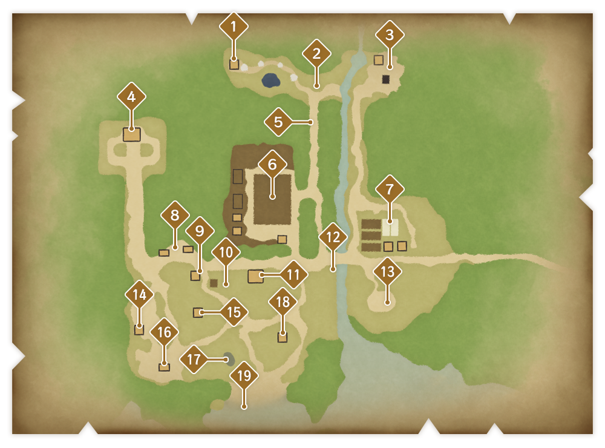

地图

- 泉水之森
有神圣泉水的森林。巨大的树木中住着小矮人。
- 森林的入口
泉水之森的入口。有时会出现大蜥蜴。
- 采掘现场
卡特和芙洛拉进行采掘的地方。在这里能够帮忙进行采掘。
- 宅邸
罗玛娜的宅邸。卢米娜和塞巴斯汀也居住于此。
- 林荫道
连接泉水之森的林荫道。
- 主角的牧场
动物们的小屋、田地、主角以及塔卡克拉的家在这里。能在这里干农活。
- 贝斯塔的农场
贝斯塔的农场，瑟比妮娅和玛修也居住于此。农作物的种子可以从位于农场的他们这里购买。
- 居民们的家
遗忘之谷居民们的家的坐落在这里。
- “蓝鸟”咖啡馆
高凡开的咖啡馆。在这里能买到饮料和小吃，食用后能够恢复体力与活力。
- 遗忘之谷广场
广场有标志性的圆形石板地。每个月班会在这里出两次摊，主角也可以在这里摆摊。
- 旅馆“路过瞧瞧”
迪和露经营的旅馆。洛克和娜美也居住于此。
- 河边
通向大海的河流沿岸。视野开阔，也有长凳。
- 观海山丘
视野良好的山丘，能够看到海。
- 烟花工匠的家
烟花工匠柯萨兰与帕萨兰的家。高脚屋式建筑，出入时需要用到绳子。
- 科学家的家
科学家达里尔居住的房屋。
- 艺术家的家
艺术家戈迪居住的房屋。
- 龟沼
小型沼泽。有时候会有巨龟前来饮水。
- 吟游诗人的家
吟游诗人古斯塔夫居住于此。
- 海滨
能够一望美丽大海的海滨。